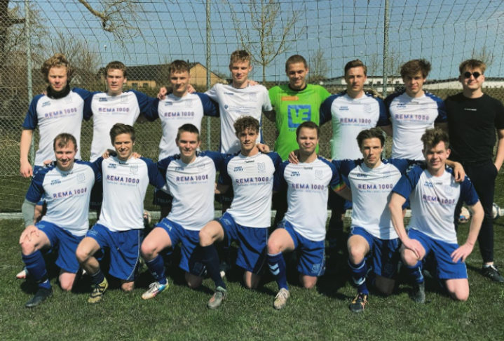

Ugens serieklub
Viby If legends - 8260 Viby J
I denne uge har vi valgt at fremhæve Viby If Legends. En nyopstartet klub på vej mod toppen. Vi vil komme ind på nogle af holdets profiler, samt hvordan det hele startede for en vennegruppe i forstadsbyen Viby.

Nye smil i smilets by
I denne uge tager vi et smut til smilets by, Aarhus. Her har vi taget fat i en lille forstands by en spytklat fra centrum. Nemlig fodboldklubben Viby IF. Nogen kan måske huske dem fra deres opgør mod FC København i pokalturneringen et par år tilbage, men denne gang er det altså ikke klubbens førstehold der skal i rampelyset.
Det er derimod hvad der nu er holdet 3. hold, Viby If Legends. En klub dannet på kammeratskab og gamle relationer til fodboldens verden, har nu samlet en flok drenge igen og det ser ikke ud til at de kigger sig tilbage under nogen omstændigheder.
Succes i serierækkerne
Vi har været ude og gå på græsset og fået snakket lidt med nogle af profilerne på holdet, hvor det tydeligt kan mærkes hvad deres kerneværdier er. ”Holdet vi har nu, har vi lavet fordi vi ønskede et sted at spille fodbold på vores præmisser, at det så er gået hen og blevet så succesfuldt, havde man måske ikke forventet.” udtaler en af holdets større offensive profiler Christian Thrige.
Succes i serierækkerne
Vi har været ude og gå på græsset og fået snakket lidt med nogle af profilerne på holdet, hvor det tydeligt kan mærkes hvad deres kerneværdier er. ”Holdet vi har nu, har vi lavet fordi vi ønskede et sted at spille fodbold på vores præmisser, at det så er gået hen og blevet så succesfuldt, havde man måske ikke forventet.” udtaler en af holdets større offensive profiler Christian Thrige.
Man kan hurtigt konstatere at succes i serierækkerne, har været et af de største udkom for denne gruppe unge drenge. De har nemlig nu spillet i alt 39 kampe og blot tabt 1. Derudover er der 37 ud og 38 sejre blandt de resterende kampe.
Alle kender alle
”Det er helt utroligt at en flok unge drenge kommer ud af det blå og pludselig repræsentere vores klub så hurtigt, vi er meget glade for at vi kunne hjælpe dem med at lave deres lukkede hold”.
Et lukket hold er det nemlig. Drengene har nemlig alle en relation til nogle på holdet på forhånd, hvilket egentlig er sådan holdet startede i første omgang. På den måde har drengene selv kontrol over hvornår der bliver trænet, som på nuværende tidspunkt er hver torsdag. ”Det giver os kontrol over hvad vi vil med det her projekt. Jeg er rigtig stolt over hvad vi har kunne gøre for klubben på blot 3 sæsoner og jeg taler for alle når vi kun ser fremad.” Udtaler holdets træner Rasmus Juul.
Et hold med lys fremtid
Rasmus er faktisk en af de yngste på et ellers meget ungt hold. Han er nemlig blot 20 år, hvor gennemsnitsalderen ligger på 22 år. Rasmus har altid haft en passion for fodbold, som derfor har givet ham stor blod på tanden når det kommer til at stå og dirigere på sidelinjen.
”Jamen jeg tror det hele startede med at jeg ikke rigtigt var lige så god som de andre i mine unge år, men derimod havde jeg meget almen viden og sund fornuft når det kom til spillets strategier. Nu har jeg ledt det her hold ubesejret gennem 2.5 sæson, indtil et nederlag sidste weekend. Det må da sige et eller andet”.
Os på redaktionen hos Fodboldbanen kan man is i maven, anbefale Viby If Legends som et besøg værd hvis man nu var i Aarhus på en kampdag. Der bliver garanteret vilje i 90 minutter, hårdt arbejde og godt kammeratskab.
Derfor har vi udkåret Viby If Legends til Ugens Seriehold.